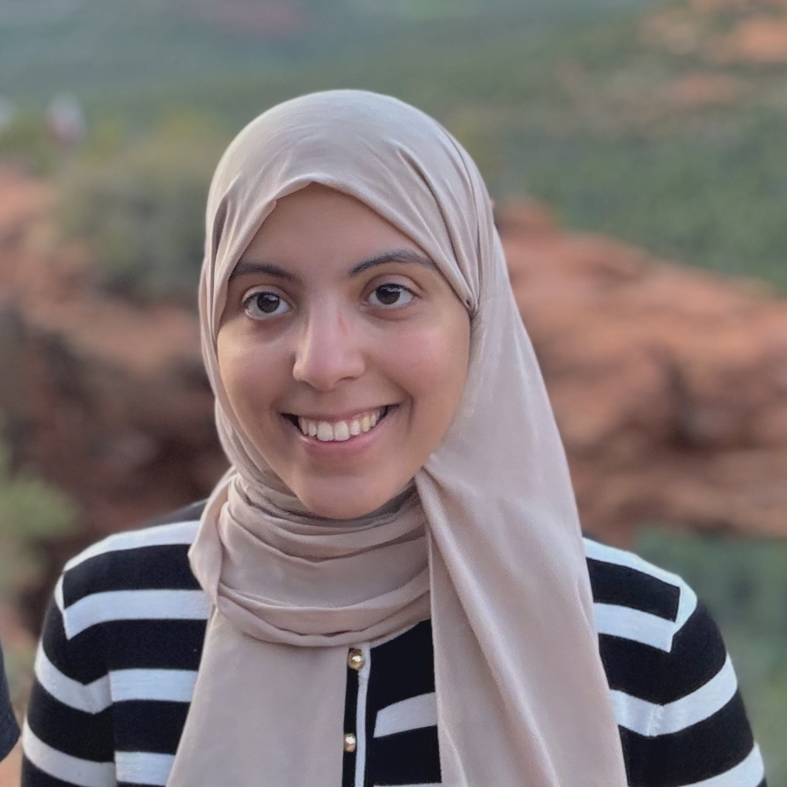
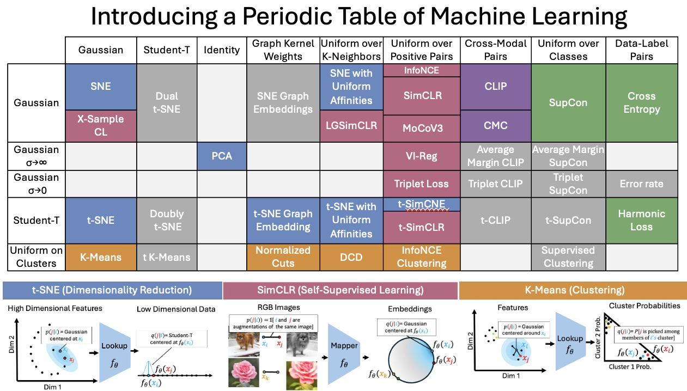
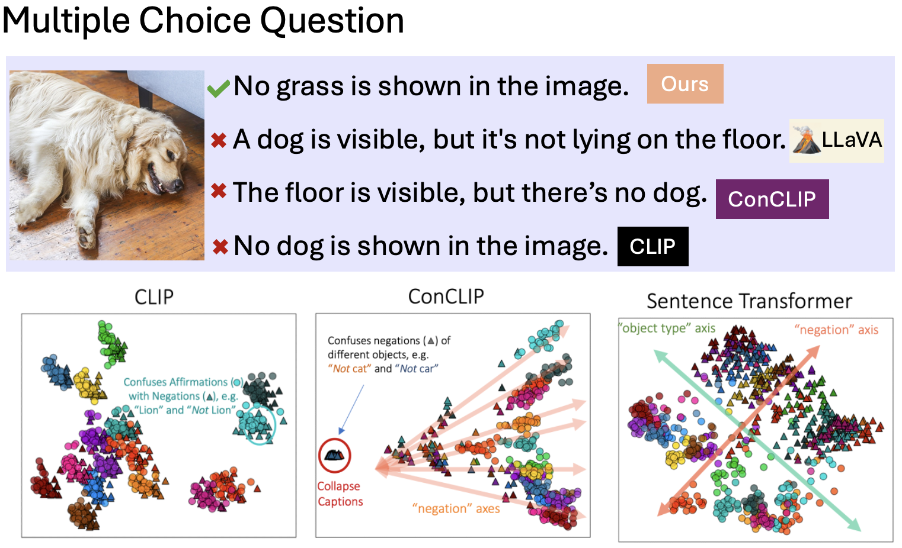
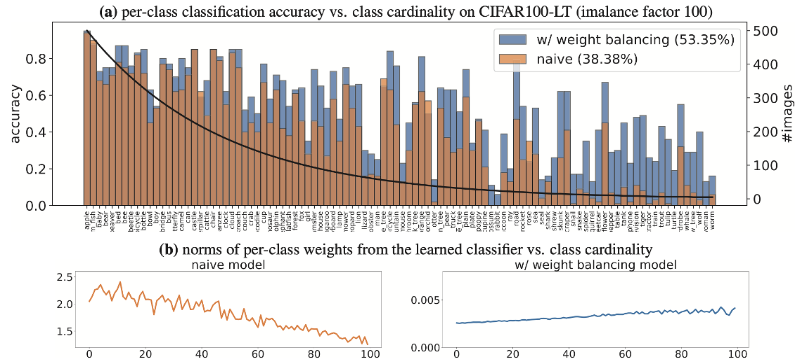
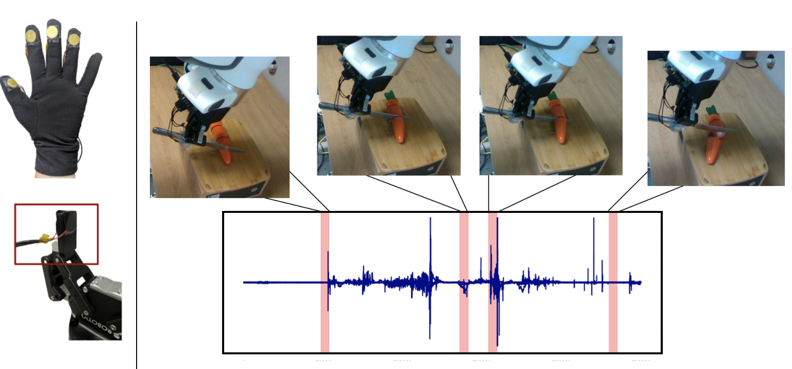
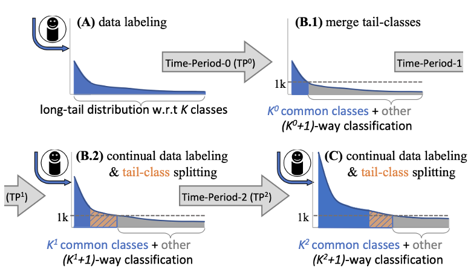
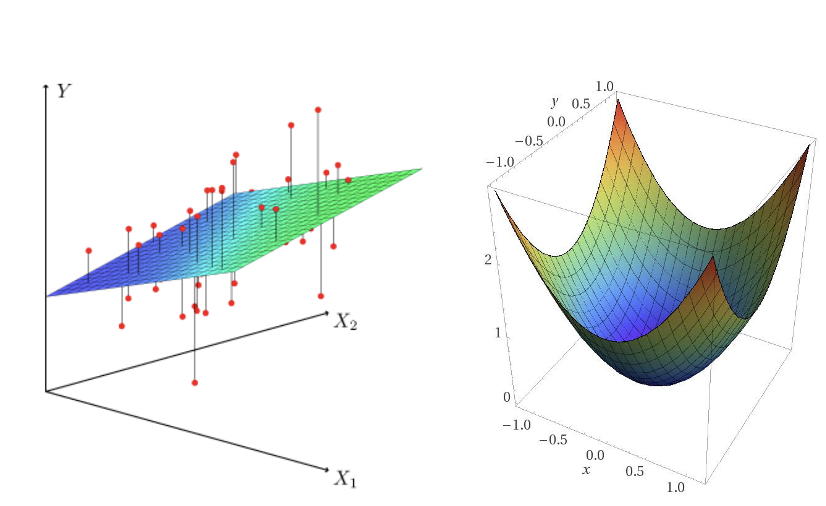
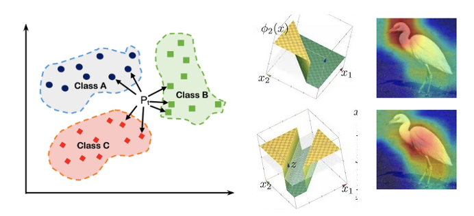
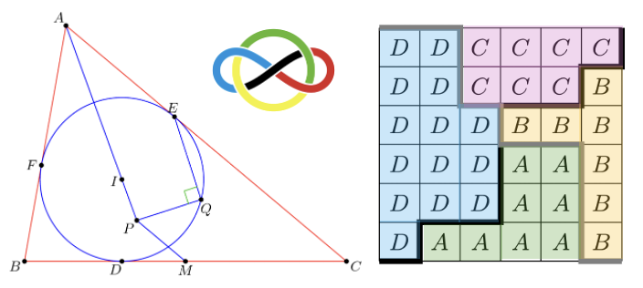

Shaden AlshammariI’m a graduate student in Computer Science and Engineering at MIT CSAIL, advised by William T. Freeman. My research focuses on advancing self-supervised learning, vision-language models, and imbalanced learning to enhance the understanding and generation of meaningful representations. I completed my B.S. in Mathematics and Computer Science at MIT, where I worked with amazing mentors including Deva Ramanan and Shu Kong at CMU's Argo AI Center, as well as Abhinav Gupta and Victoria Dean at CMU’s Robotics Institute. Beyond research, I’m active in the math olympiad community as a former contestant (IMO Bronze 2017, EGMO and BMO Gold 2016). I also train students, design problems, and I served as a deputy leader and observer at IMO and EGMO. |
 |
|  |
I-Con: A Unifying Framework for Representation Learning
Shaden A., John R. Hershey, Axel Feldmann, William T. Freeman, Mark Hamilton 🔗 Project Website | Video Explainer | MIT News | Paper | Code | ICLR 2025 🎉 A unified framework that generalizes loss functions in representation learning, exposing connections across methods and achieving state-of-the-art results in unsupervised image classification on ImageNet-1K. |
|  |
Vision-Language Models Do Not Understand Negation
Kumail Alhamoud, Shaden A., Yonglong Tian, Guohao Li, Philip Torr, Yoon Kim, Marzyeh Ghassemi 🔗 Project Website | Video Explainer | MIT News | Paper | Code | CVPR 2025 A benchmark evaluating negation understanding in vision-language models reveals performance limitations, with targeted improvements increasing recall by 10% and accuracy by 40%. |
|  |
Long-tailed Recognition via Weight Balancing
Shaden A., Yu-Xiong Wang, Deva Ramanan, Shu Kong CVPR 2022 (190 citations to date!) This study explores weight balancing techniques like L2-normalization, weight decay, and MaxNorm to address bias in long-tailed recognition, achieving state-of-the-art results across five benchmarks by balancing classifier weights for rare and common classes. |
|  |
Using Contact Microphones for Robot Manipulation
Shaden A., Victoria Dean, Tess Hellebrekers, Pedro Morgado, Abhinav Gupta Women in Computer Vision Workshop @ NeurIPS, 2022 This work combines visual data with contact audio to enhance manipulation in contact-rich tasks, leveraging high-frequency tactile signals from microphones to outperform single-modality approaches. |
|  |
Continual Long-Tailed Recognition: Merge Tail Classes Today, Separate them Tomorrow
Yanan Li, Shaden A., Bin Liu, Shu Kong Preprint, 2022 This work introduces a continual learning approach for long-tailed recognition, using a Mean-Shift module and Supervised Contrastive loss to improve feature learning and expedite finetuning across time periods, achieving state-of-the-art performance. |
|  |
Lead Graduate Instructor, Linear Algebra and Optimization (18.C06) MIT Department of Mathematics - Sep 2022 - Present I teach two weekly recitation sessions to help clarify challenging topics for 38 students and develop weekly handouts and problem sets for a larger group of 180 students. I also coordinate a team of five TAs and three Graders. I was honored to be nominated by my students for the Teaching Awards. |
|  |
Teaching Assistant, Introduction to Machine Learning (6.036) MIT EECS Department - Jan 2024 - May 2024 Supported professors in organizing technical materials on ML topics, conducted weekly recitations, lab sessions, and hosted office hours for student learning support. |
|  |
Math Olympiad Trainer + Deputy Leader and Observer @ IMO & EGMO (2019–2023) Trained students in combinatorics, number theory, algebra, and geometry for the International Math Olympiad (IMO), focusing on advanced problem-solving skills. Additionally, contributed by suggesting problems for exams for team selection tests. |
Website design credits to Jon Barron.